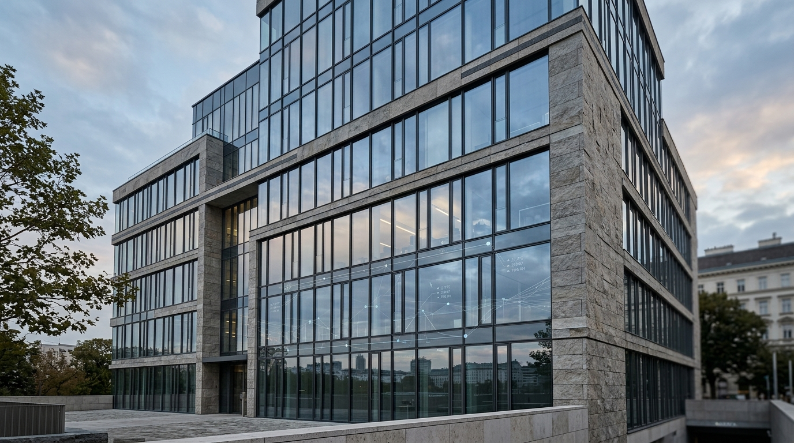

Pillar · 12 min
Warum Gebäudedigitalisierung 2026 keine Option mehr ist
EPBD-Novelle, CSRD-Reporting und CO₂-Bepreisung treffen ab 2026 zeitgleich. Was Eigentümer:innen jetzt verstehen — und entscheiden — müssen.
Artikel lesen →